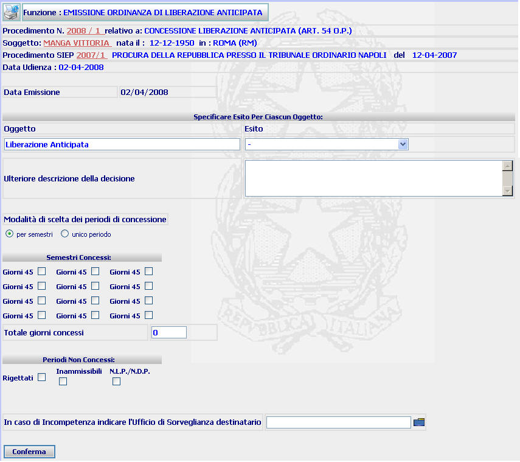
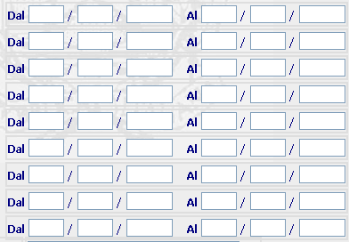
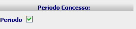
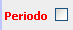
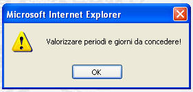
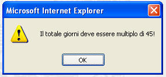
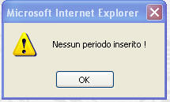

EMISSIONE ORDINANZA DI LIBERAZIONE ANTICIPATA: La funzione consente di inserire l'esito del procedimento avente ad oggetto una liberazione anticipata, di specificare i periodi valutati e di inserire l'eventuale ulteriore descrizione della decisione che verrà riprodotta nel corpo dei documenti generati dal sistema. La funzione consente, altresì, di indicare l'eventuale Ufficio di Sorveglianza destinatario in caso di incompetenza.
LE MASCHERE VIDEO
La funzione viene realizzata attraverso la maschera sottostante, attraverso la quale è possibile visualizzare i dati del procedimento ed inserire l'esito del procedimento avente ad oggetto una liberazione anticipata

COME FARE PER ...
| Per visualizzare il dettaglio del procedimento Sius l'utente deve cliccare sul link relativo all'Anno/Numero del procedimento Sius evidenziato in rosso; |

| Per visualizzare il dettaglio del soggetto l'utente deve cliccare sul link relativo al cognome/nome del soggetto evidenziato in rosso; |

| Per visualizzare il dettaglio del procedimento Siep l'utente deve cliccare sul link relativo all'Anno/Numero del procedimento Siep evidenziato in rosso; |

| Per completare la fase di emissione dell'ordinanza
l'utente deve:
|
OPZIONE 1. Se si sceglie la modalità "per semestri", occorre cliccare, nella sezione "Semestri concessi", sul check button relativo al primo semestre ed a questo punto si aprirà una porzione di maschera dove inserire il semestre relativamente al quale si intenda concedere il beneficio.

Una volta inserito il semestre, occorre nuovamente cliccare sul check button relativo al primo semestre e la dicitura si modificherà in , confermando in tal modo il corretto inserimento del periodo. Le stesse operazioni andranno effettuate (utilizzando, ovviamente gli altri check button ) per inserire altri semestri. Ogni volta che verrà inserito un nuovo semestre, il sistema aggiungerà 45 giorni nella parte
OPZIONE 2. Se si sceglie la modalità "intero periodo ", occorre cliccare sul check button presente nella sezione "periodo concesso" ed a questo punto si aprirà la porzione di maschera (vedi opzione 1) dove inserire l'intero periodo relativamente al quale si intenda concedere il beneficio

Occorre poi cliccare nuovamente sul check button precedentemente selezionato e la dicitura si modificherà in

.A questo punto occorre inserire nella parte il totale dei giorni concessi.
|
nel caso in cui si debbano indicare dei periodi valutati negativamente, occorre selezionare nella sezione "Periodi non concessi" il check button relativo al tipo di valutazione (Rigetto, inammissibilità o NLP) operata dal Collegio |
A questo punto si aprirà la porzione di maschera (vedi sopra: opzione 1 e opzione 2) dove va inserito l'intero periodo valutato negativamente.
L'operazione dovrà essere ripetuta selezionando altro check buton nel caso in cui il Collegio disponga, ad esempio, il rigetto per un periodo e l'inammissibilità per un altro.
|
nel caso in cui si debbano indicare dei periodi valutati positivamente e periodi valutati negativamente, occorre utilizzare congiuntamente le modalità previste dai punti a) e b) |
Nel caso in cui il Tribunale di Sorveglianza si dichiari incompetente a decidere e disponga la trasmissione degli atti al Magistrato di Sorveglianza, l'utente deve inserire nel relativo campo l'indicazione della sede del Magistrato di Sorveglianza competente a decidere
Compiute le operazioni indicate nei punti precedenti l'utente deve confermare i
dati inseriti selezionando il bottone

CAMPI
I campi da compilare sono i seguenti:
| Esito | Campo (obbligatorio) nel quale va inserito attraverso l'apposita tendina l'esito relativo all'oggetto iscritto |
| Ulteriore descrizione della decisione | Campo nel quale vanno inseriti i dati particolari della decisione che saranno visualizzabili nella maschera di dettaglio ordinanza e che verranno automaticamente riprodotti nel corpo del provvedimento generato dal sistema |
| Dal ... al ... | Campi nei quali vanno inseriti l'inizio e la fine dei periodi valutati |
| Totale giorni concessi | Campo nel quale va inserito il totale dei giorni di liberazione anticipata concessi (tale dato viene compilato automaticamente nel caso in cui si opti per la modalità di scelta dei periodi di concessione "per semestri") |
| In caso di incompetenza ... |
Campo nel quale va inserita la sede
del Magistrato di Sorveglianza competente nel caso in cui il Tribunale
di Sorveglianza si dichiari incompetente (digitandola per intero o
selezionandola attraverso l'apposito
Pulsante di Ricerca da Lista Predefinita |
PULSANTI
Oltre al pulsante
 facente parte del gruppo di
pulsanti di "Uso Comune" è
presente il seguente pulsante:
facente parte del gruppo di
pulsanti di "Uso Comune" è
presente il seguente pulsante:
|
PULSANTE |
DESCRIZIONE |
|
|
A fronte di tale comando, il sistema visualizza la lista predefinita. |
BOTTONI
Oltre ai comandi funzionali relativi al menù verticale è presente il seguente bottone:
|
COMANDI |
DESCRIZIONE |
|
|
A fronte di tale comando, il sistema dopo aver verificato la validità dei dati specificati, presenta la maschera di dettaglio ordinanza |
CONTROLLI
Il sistema effettua i seguenti controlli:
| Se si omette di inserire l'esito relativo all'oggetto iscritto il sistema fornisce il seguente messaggio: |

| Nel caso in cui si selezioni l'esito "concede" se si omette di inserire i periodi o compilare il campo "totale giorni concessi" (allorquando venga utilizzata come modalità di scelta dei periodi di concessione quella "unico periodo") il sistema fornisce il seguente messaggio: |

| Se il campo "totale giorni concessi" (nel caso in cui venga utilizzata come modalità di scelta dei periodi di concessione quella "unico periodo") viene compilato con un valore numerico che non sia multiplo di 45, il sistema fornisce il seguente messaggio: |

| Nel caso in cui si selezioni l'esito "rigetta", se si omette di inserire i periodi il sistema fornisce il seguente messaggio: |

| Nel caso in cui si selezioni l'esito "dichiara inammissibile" o "dichiara NLP/NDP", se si omette di inserire i periodi il sistema fornisce il seguente messaggio: |